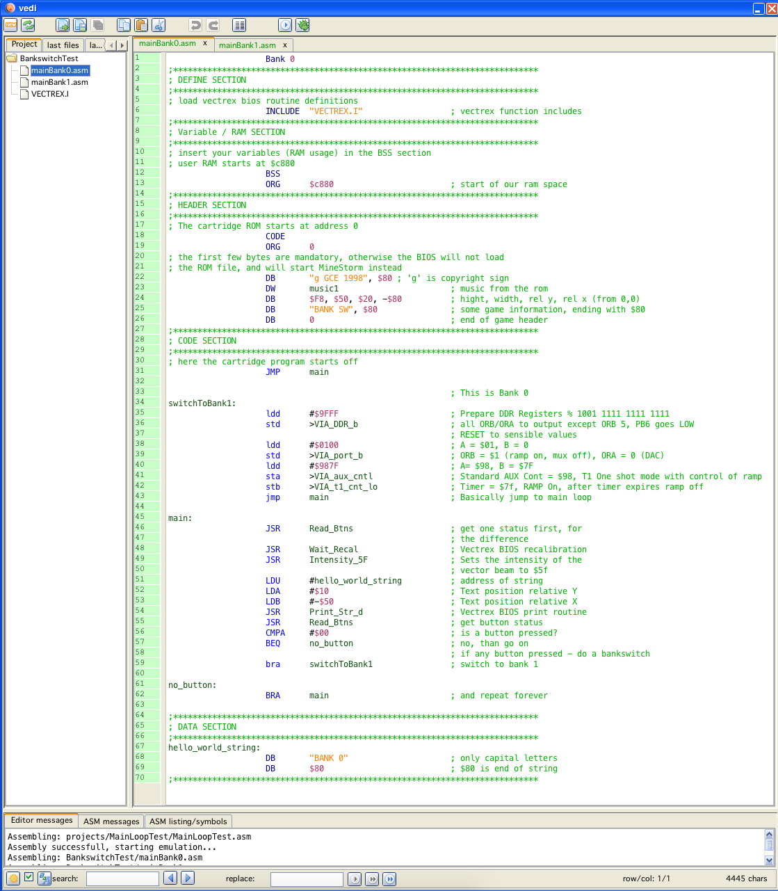
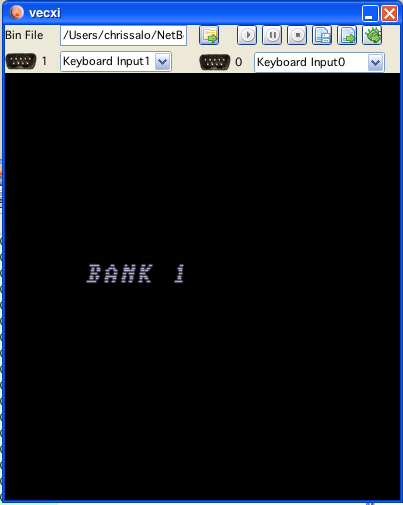

new project window
When creating a new project one can also create projects that support bankswitching.
As of now two different bankswitch schemes are supported:
"Dondzila" Bankswitching (2 banks)
"VecFlash" Bankswitching (up to 64 banks)
In order to create code for these schemes you must:
check the checkbox "create standard game loop"
check the checkbox "create bankswitch code"
and you must select what kind of bankswitching you want
if vecflash is chosen, you have to give the number of banks (combobox)
In the table below the checkboxes you can enter filenames for each bank (if left blank, than standard filenames will be created). You can even use the same filename for different banks. Column 3 of the table ("define(s)") allows you to enter a "DEFINE" so you can chose sections in your main file to include/exclude.
The project window (for a "Dondzila"-Bankswitching) looks like:
new project window
The result is two generated files for "Main" (since I did not give any file names they are named "mainBank0.asm" and "mainBank1.asm").

created files
The files are documented, and can be run in vide straight out of the box. The program only displays a string "bank 0", if any button is pressed, the bank is switched and "bank 1" is displayed.

bank 0

bank 1